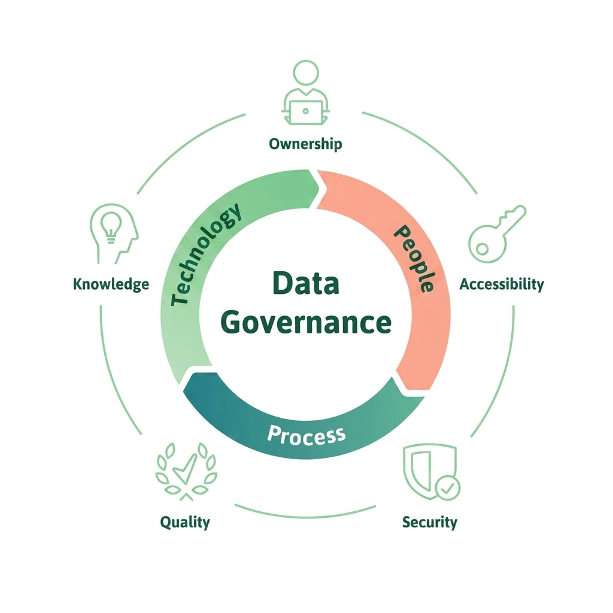
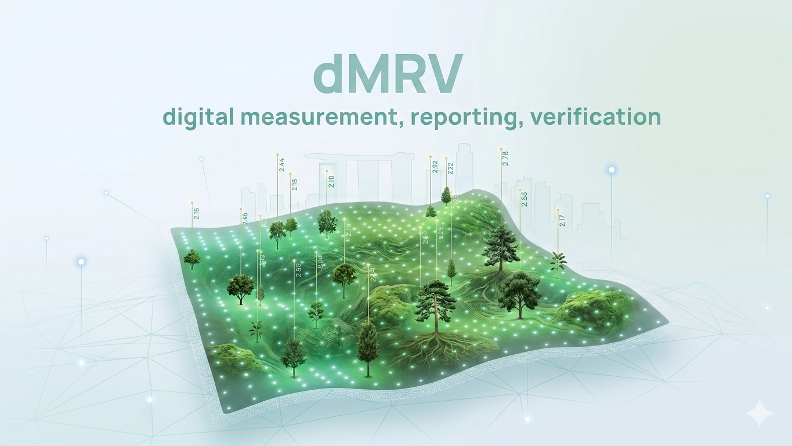
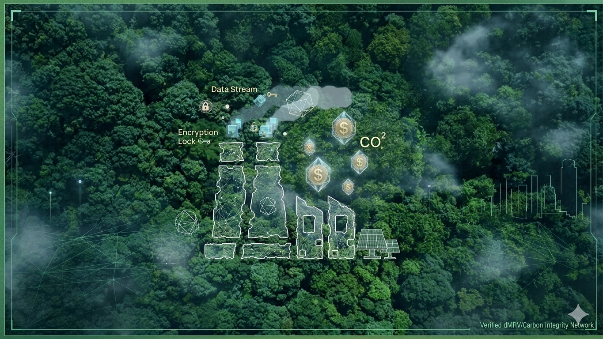

Solutions
Digital MRV architecture for defensible environmental commodities
End-to-end cryptographic trust and data governance for distributed renewables—from sovereign ingestion to reviewer-ready evidence packs.

Core competencies
Traditional MRV for dispersed assets often relies on manual reads or unauthenticated files—creating delay, dispute, and double-counting risk. Spruces anchors trust through cryptographic ingestion, sovereign routing, and continuity under disruption.
Cryptographic ingestion verification
Every edge gateway deployed by Spruces integrates a hardware secure element (SE). Distributed renewable generation data is locally wrapped at the physical moment of production on the device edge with non-repudiable digital signatures through a true random number generator (TRNG) mechanism.
Sovereign data routing compliance
To meet stringent global environmental data compliance and data sovereignty requirements, the Spruces system employs innovative local roaming slice routing. Certified messages from Southeast Asian project sites are transmitted directly via dedicated international channels to Spruces’ financial-grade data hosting nodes on AWS Singapore (ap-southeast-1), with transmission paths that neither traverse nor persist on any third-party sensitive domestic gateways.
Data continuity & disruption mitigation
In unstable microgrid environments in remote areas, traditional MRV systems often suffer audit chain interruption due to power outages. Spruces has pioneered edge anomaly self-healing logic: when external power interruption occurs, terminals instantaneously trigger alerts, forcibly reporting exception interruption messages with precise timestamps and fault status codes.

Data continuity & disruption mitigation service
In weak-grid and remote connectivity environments, missing intervals are often treated as suspicious—putting audit chains and programme credibility at risk.
When power or connectivity drops, Spruces edge anomaly self-healing logic emits signed exception interruption messages with precise timestamps and fault status codes—converting ambiguous gaps into documented, reviewable records under agreed methodological treatment.
Outcomes depend on methodology and independent review; we do not guarantee specific audit results or loss-avoidance percentages.
What stronger governance enables
| Project owners | Fewer disputes over data gaps; faster reviewer dialogue |
|---|---|
| Verification partners | Cryptographic traceability and structured evidence |
| Buyers | Clearer provenance narrative before retirement |
| Public sector | Monitoring that supports national clean-energy reporting |
Designed for the voluntary carbon market ecosystem
Our architecture is being developed with reference to widely used voluntary standards and digital MRV tooling—including methodologies associated with Gold Standard and Verra (VCS), and digital reporting concepts compatible with Singapore’s environmental market infrastructure. Integrations (e.g. open digital MRV platforms such as Hedera Guardian) are on our roadmap where they materially improve transparency and interoperability.
Spruces is not affiliated with, endorsed by, or certified by the organizations named unless separately announced.
